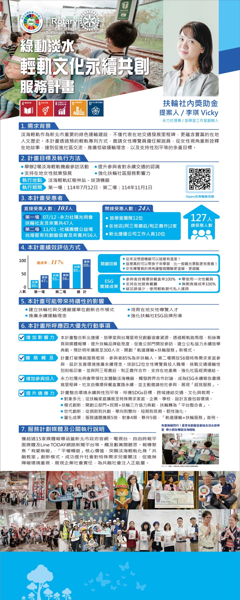

Doing vocational service well is, at the same time, social service. By turning women returning to the workforce into tour guides, she weaves local culture, low-carbon transport, and women's empowerment into a single thread.
Read the full profile →
The Danhai Light Rail, as a key green transit project in New Taipei City, represents not only a milestone in local transport development but also a wealth of local humanistic history. By reserving dedicated light rail cars, this project invites female tour guides to serve as docents, reinterpreting local stories from a female perspective. It achieves the multiple goals of promoting community exchange, advancing low-carbon transport, and supporting gender equality.
Total beneficiaries: 127 people
| Session | Target | Actual |
|---|---|---|
| First session | 30 | 47 |
| Second session | 55 | 56 |
| Total | 85 | 103 |
Achievement rate: 117%
This project integrates resources from New Taipei Metro, the Travel and Learning Academy, and the Taiwan Star Kids Creative Arts Association. Through light rail marquee displays, fan pages, and media coverage, it raises Rotary's brand visibility, encourages the public sector to open up for visits, and establishes a model of public-private collaboration in sustainable travel and learning. It plans to expand to 300 participants next year, creating a new "rail transit × Rotary service" model.
The project breaks the traditional service framework, with 85% of participants being non-Rotarians. The second session opened to 56 families with special needs, designing a friendly environment to promote sustainability. It trained 12 female tour guides to enter the workforce, challenging gender stereotypes in the transport sector. It also partnered with A-San-Ge Farm and Hezheng Farming to support local industry and strengthen community economic ties.
The Club's Sunshine Regular Meeting led members to experience the Danhai depot, sparking cross-sector collaboration discussions and becoming a milestone in writing the ESG sustainability report. Members brought their own eco lunchboxes to practice sustainability and proactively invited other clubs to join, demonstrating "Service Above Self."
The project integrates environmental sustainability and gender equality, aligning with the SDGs and connecting transport, culture, and education across domains.
The project received coverage from more than 15 media outlets, including the New Taipei City Government's official website, television stations, the Liberty Times print media, and the Line TODAY online news platform, reaching tens of thousands of viewers. Coverage focused on the core values of "love without barriers" and "equal access for all," highlighting the innovative model of the Danhai Light Rail transformed into an "inclusive classroom." It successfully raised social attention to children with special needs, promoted awareness of accessible environments, demonstrated corporate social responsibility, and injected positive energy into an inclusive society.
"Love Without Barriers, Traveling Together! The Star Kids Creative Arts Association joins Tamsui Travel and Learning Academy to take children on a joyful ride on the Danhai Light Rail"
Caption: Children happily ride the Danhai Light Rail alongside Jimmy Liao's artwork.